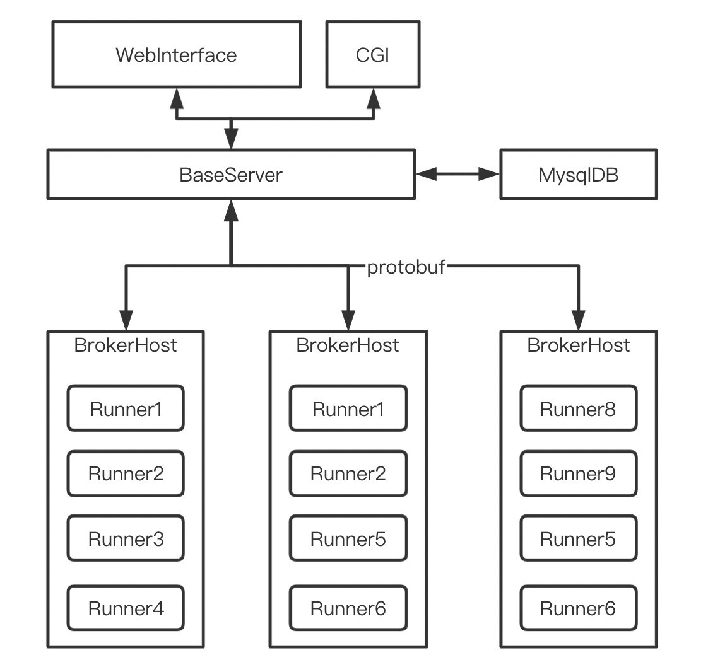
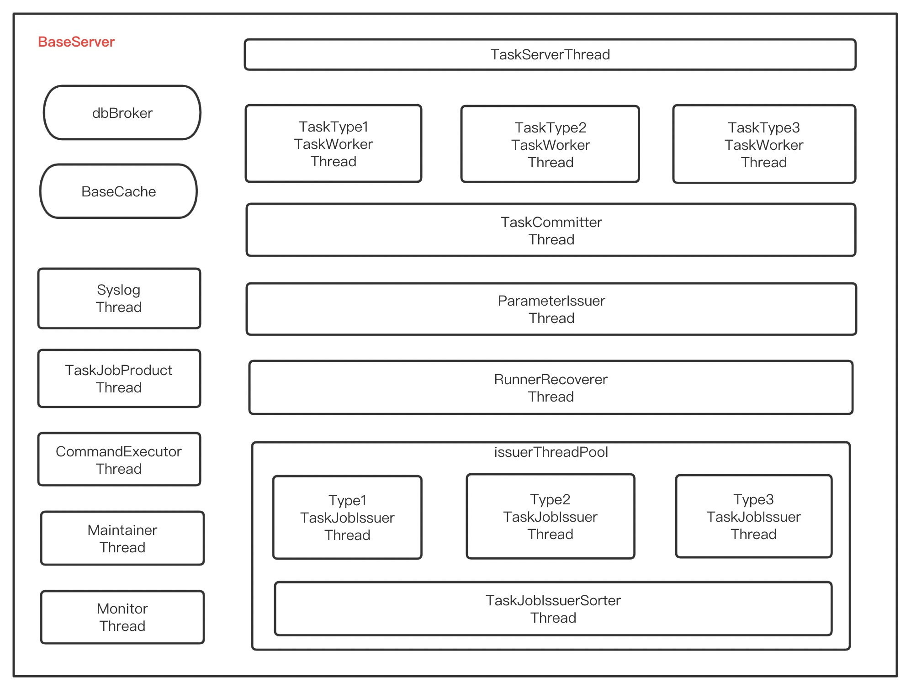
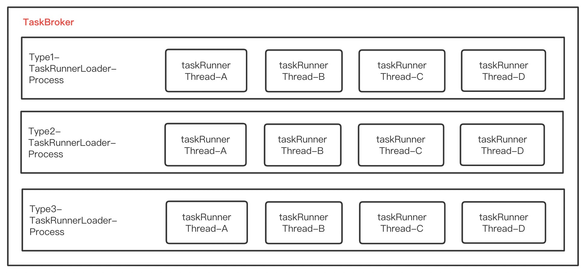

腾讯-Lhotse调度系统
角色
参与者，负责其中某些runner的设计开发
背景
周期性运行离线计算任务，用来替代Oracle中的Job(旧)->Scheduler(10g)周期任务;
支持多种任务类型，可以进行任务依赖管理，按照先后顺序执行
开发工具
- 后台开发语言: java,多线程,socket服务,本地缓存服务
- 通信协议: protobuf
- 后端数据存储: mysql5.5
- runner开发: java,c++,python,php
整体架构

BaseServer架构

TaskBroker结构

约定
用一台或多台机器部署BaseServer，提供Socket服务和CGI服务
用多台机器当作TaskBroker，
每台TaskBroker机器上面可以部署多个TaskRunnerLoader进程，用来处理不同任务类型的taskJob。
TaskRunnerLoader是常驻Daemon进程，用多线程来处理每个taskJob，
每请求得到一个Job实例，则启动一个线程来处理，
处理过程中和处理完，此线程负责把Job实例的心跳和状态信息报告发送给BaseServer。
一中taskType类型对应一种taskRunner，一种taskRunner可以运行在多个broker机器上面。
每个taskRunnerLoader都可以独立向BaseServer请求获取需要执行的任务和上报任务状态。
每次taskRunner向BaseServer请求任务实例,baseServer都能获取请求的任务类型和客户端IP。
taskRunner可以向BaseServer请求需要执行的Job和需要Kill的Job两种状态的实例。
taskRunner可以向BaseServer报告自己任务执行的进度和状态，执行的成功失败，kill的成功失败。
功能模块
- 网络请求分发线程模块，负责路由socket请求，一个代理brokerIp一个线程处理,worker线程池
- 任务实例下发线程模块，负责任务请求处理和任务下发
- 任务实例排序和依赖检查线程模块，负责从众多任务实例中找出优先被下发的
- 依赖处理线程模块，负责找出满足依赖的任务实例，并更新状态
- 任务实例化线程模块，负责任务实例化工作
- 状态提交线程模块，负责实例状态更改写入db
- 参数请求处理线程，负责各个runner插件的参数请求处理,每种任务类型插件都有自己的扩展参数
- runner插件启动模块，负责runner插件配置检查，状态更新，实例状态更新
- 命令干预执行线程模块，负责执行用户的命令，包括任务重做，补录，强制成功，杀死等
- 维护线程模块，负责清理过期任务，过期Job实例，数据统计，滚动分区
- web用户使用界面模块，负责给数据开发人员提供可视化的工作流配置
- 管理控制台，负责给管理和运维维护人员进行插件注册管理，任务干预等处理
使用情况
核心表
create table lb_task(
task_id 任务id
task_type 任务类型
task_cycle 取值分钟60,小时3600,天86400等
start_date
end_date
task_status 任务状态
task_action 任务命令
)
create table lb_task_run(
task_id
curr_run_date 当前Job运行时间
next_run_date Job下个周期时间
job_status Job状态
primary key (task_id,curr_run_date)
)
create table lb_task_link(
task_from_id 父任务id
task_to_id 子任务id
depend_type 依赖类型
)
job_staus取值Enum(
Rough 草稿中
Ready 就绪态,任务可调度且没有调度过
Running 运行态，任务正在运行
Succ 正常结束状态，任务成功结束
Failed 异常结束状态，任务失败结束
WaitKill 等待终止
Killing 正在终止
Killed 终止成功
Hanged 终止失败
StopSchedule 停止调度，即重试次数达到上限
DependenceFinish 满足依赖，实例依赖已满足，可调度
)
depend_type取值Enum(
1 同周期依赖
2 大周期依赖小周期
3 小周期依赖大周期
-n 依赖前面第n个周期任务
)
请求分发模块
1. broker代理发起请求
2. base服务器taskServer模块根据客户端ip，找到具体的taskWorker线程来处理
3. taskWorker解析broker请求，获取请求类型和请求内容
4. 如果是启动runner请求，则交给启动runner插件处理
5. 如果是状态提交请求，则交给状态处理线程模块
6. 如果是请求插件参数请求，则交给插件参数处理线程
7. 如果是请求新的任务，则交给任务下发线程处理
在各个线程中响应broker请求
任务Job生成模块
select a.task_id as task_id,
a.task_cycle as task_cycle,
a.start_date as start_date,
a.end_date as end_date
b.max_run_date as max_run_date
from lb_task a
left join (select task_id,
max(curr_run_date) max_run_date
from lb_task_run
group by task_id
) b
on (a.task_id=b.task_id)
max_run_date+task_cycle则是下一个周期Job的时间,job_status=Ready
此方案在任务多，实例多会有性能问题，因为要扫描实例表全表
任务实例获取模块
1. 根据taskType和clientIP获取等待UnSuccess的job实例列表
2. 遍历任务实例列表，如果碰到实例状态为等待kill的job，则不作任何检查，更新状态，直接下发
3. 如果任务状态不是有效态，则忽略对该任务接下来的检查，从列表中移除
4. 将实例按照优先级分配到不同的线程进行检查
5. 在每个优先级处理线程中遍历每个job，如果碰到状态为-1Rough的job，则不做任何检查，直接下发
6. 检查线程第一轮遍历会记录那些Running的任务，killing的任务，满足运行条件的任务，
Running和Killing任务记录是为了计算任务并发度，服务器并发度和代理并发度；
7. 对满足运行条件的任务进行第二轮遍历，
在任务列表里面找出满足并发度检查，实例正确性验证，任务正确性验证的实例生成新的排序列表
8. 对新对排序列表进行遍历，找到第一个满足依赖检查的Job就下发
依赖检查线程模块
该线程的主要目的是在任务下发之前，先检查任务实例的依赖状态。
如果一个任务实例的所有依赖关系都满足，则将该任务实例的状态置为DependenceFinish
命令执行模块
1. 批量冻结下线任务
2. 批量解冻任务
3. 批量补录任务Job
4. 批量重做任务Job
5. 批量修改任务Job
6. 批量kill任务Job
7. 批量强制任务Job成功
8. 批量调整任务优先级
9. 注册命令
1. 更新server信息；
2. 更新任务类型信息
3. 更新插件信息
4. 更新下发器的日志级别
维护线程模块
1. 已经实例化的一次性任务修改为下线或清理
2. 任务结束时间已经超过当前时间的任务修改为下线或清理
3. 将实例执行时长已经超过alive_wait的任务实例状态强制设置为失败
5. 删除Job实例表中过期的任务实例
6. 为日志表滚动生成新的分区
7. 数据统计记录